Gratuit, open source, et pensé pour le Commander.
Recherche & prix Cardmarket
Trouvez la carte qui manque avec une recherche multicritère à la Magic-Ville, et gardez l'œil sur son prix Cardmarket et votre budget.
Simulateur, stats & bracket
Mesurez la régularité de votre deck sur 1 000 parties, vérifiez votre base de mana et connaissez son bracket avant de vous asseoir à la table.
Copilote Claude (optionnel)
Faites vos cuts, explorez des synergies, vérifiez une règle : Claude travaille sur vos listes avec votre abonnement. Comment ça marche
L'Atelier est un deck builder gratuit et open source, pensé pour concevoir, tester et faire évoluer vos decks Magic: The Gathering en Commander.
Les bases : un constructeur de deck Magic complet
Vos decks sur tous vos appareils
Création, import, affichage en liste ou visuel, taille des cartes réglable, tri par type, tag ou fonction : organisez vos cartes exactement comme vous l'entendez. Sur ordinateur ou sur téléphone, votre compte garde vos decks à jour partout.
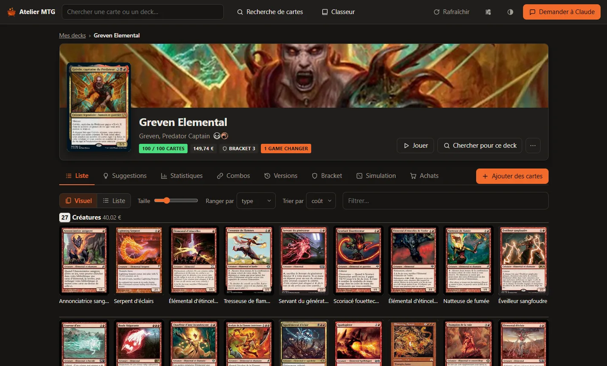
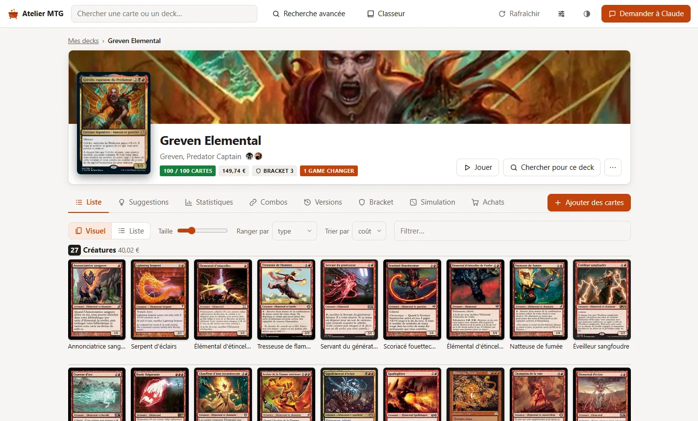
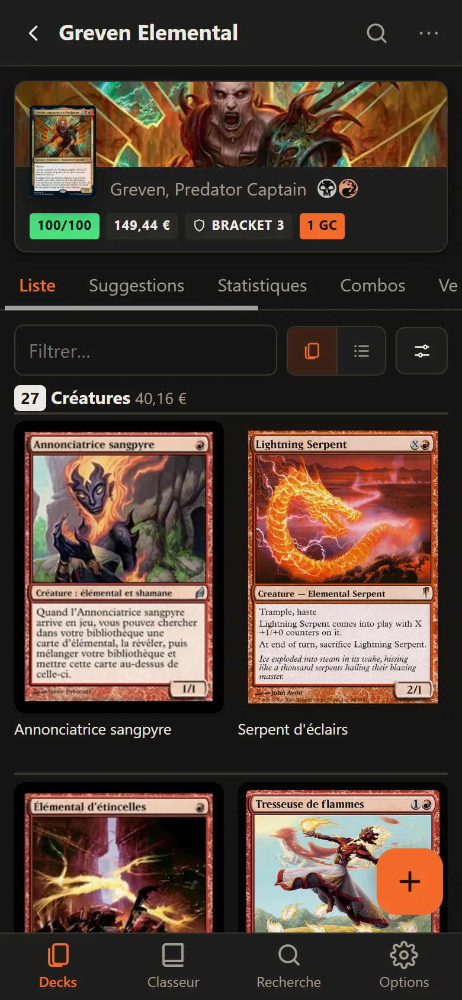
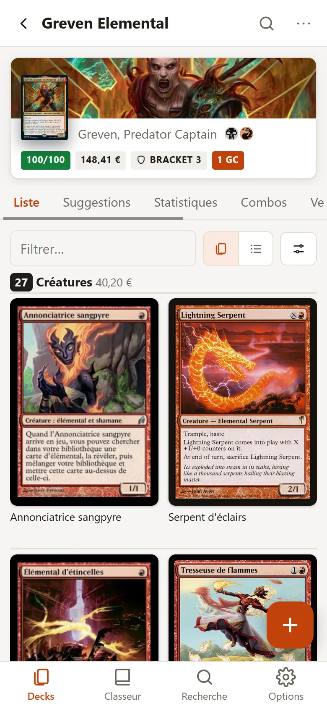
Recherche avancée
Une recherche multicritère comme celle de Magic-Ville, avec en plus un filtre de prix Cardmarket et une catégorisation automatique des cartes : ramp, pioche, tuteur, removal…
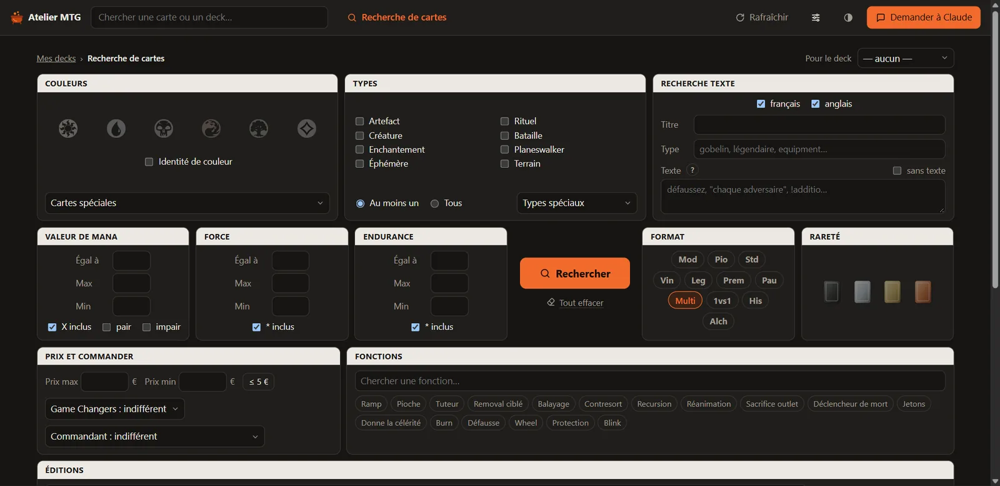
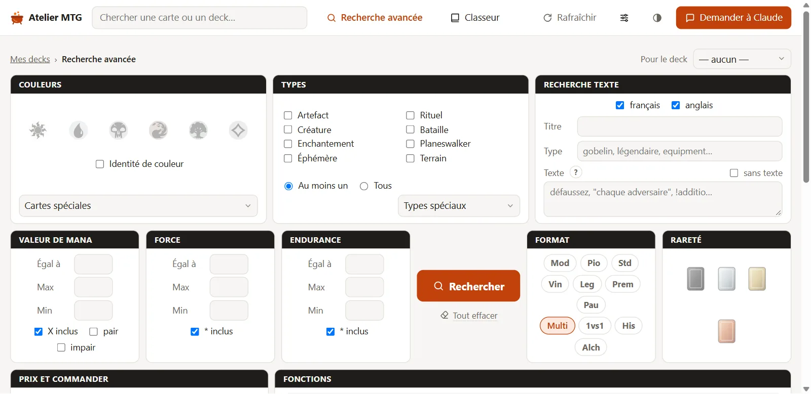
Table de jeu
Jouez vos decks en solo pour tester les mains de départ et les premiers tours : pioche, mulligan, jetons, marqueurs, planeswalkers, tout au clic ou au glisser.
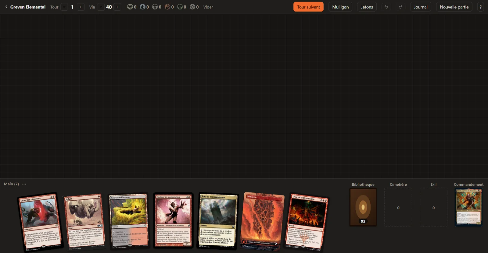
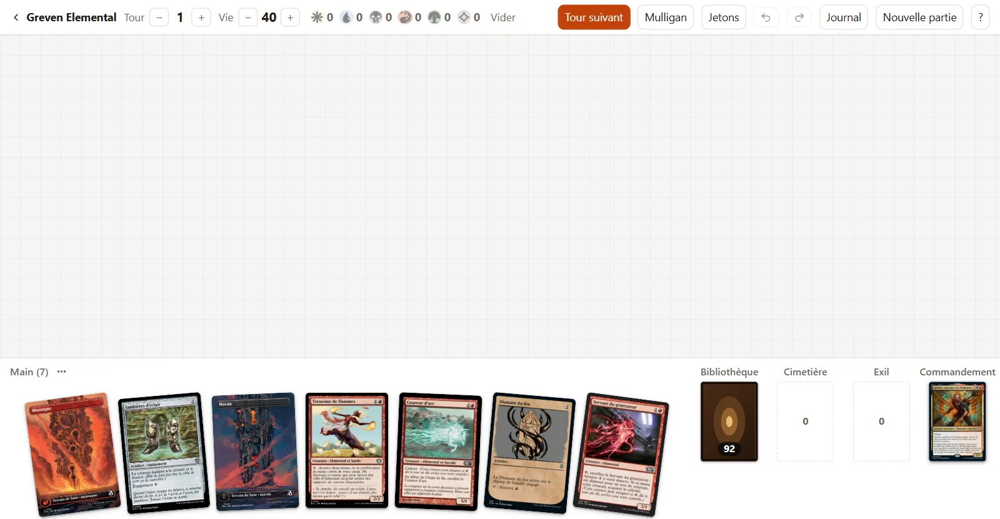
Versions et historique
Chaque modification est gardée. Enregistrez des versions, comparez deux listes, revenez en arrière.
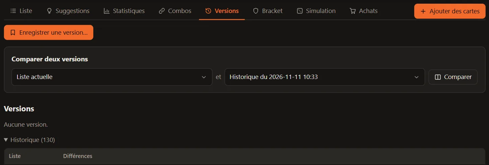
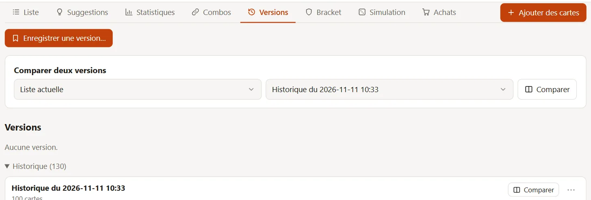
Ce qui fait la différence
Simulateur de parties
En un clic, simulez 1 000 parties à quatre joueurs pour tester la régularité de votre deck (mana, présence sur table, gestion, sortie du commandant). Comparez deux versions d'une même liste pour mesurer vos changements. Avec Claude, le simulateur apprend les cartes complexes, rejoue et vous détaille ses résultats.
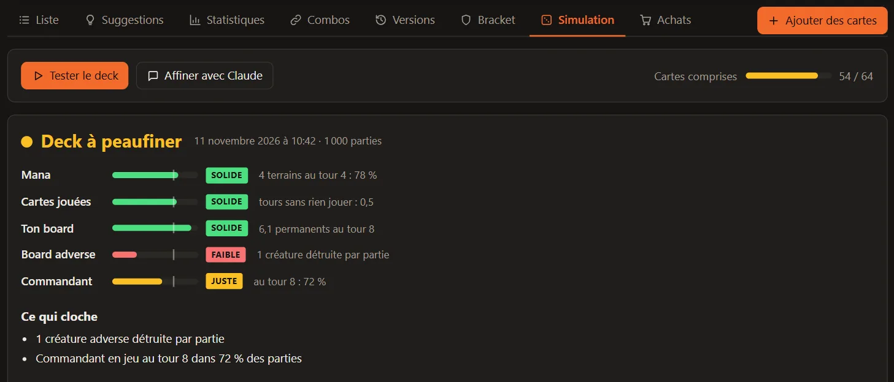
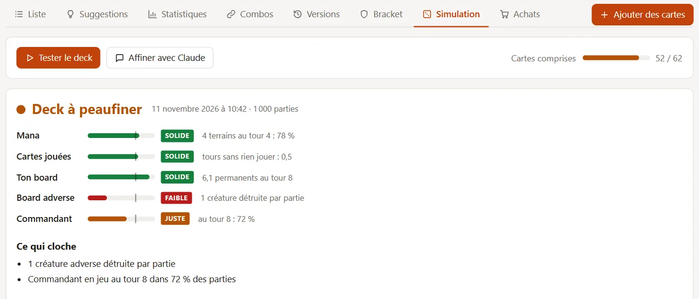
Bracket
Le bracket est estimé automatiquement selon les règles officielles : Game Changers, combos infinies à deux cartes, tuteurs… et comparé à l'estimation de Commander Spellbook.
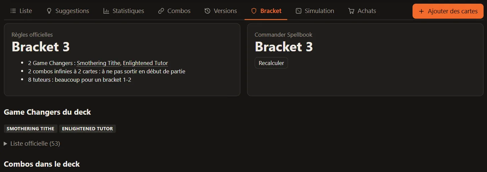
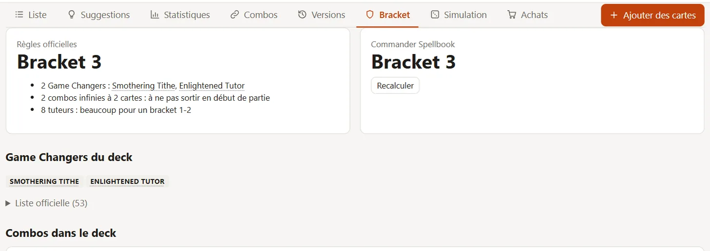
Statistiques et base de mana
Courbe de mana, types, fonctions des cartes et surtout la répartition des sources de couleur : elle compte les terrains et les cartes de ramp, et dit si chaque couleur est confortable.
Suggestions de cartes
Des recommandations ciblées selon votre commandant, vos combos et votre classeur. Triées par pertinence, adaptées à vos couleurs et à votre budget, avec filtres par type, coût et prix.
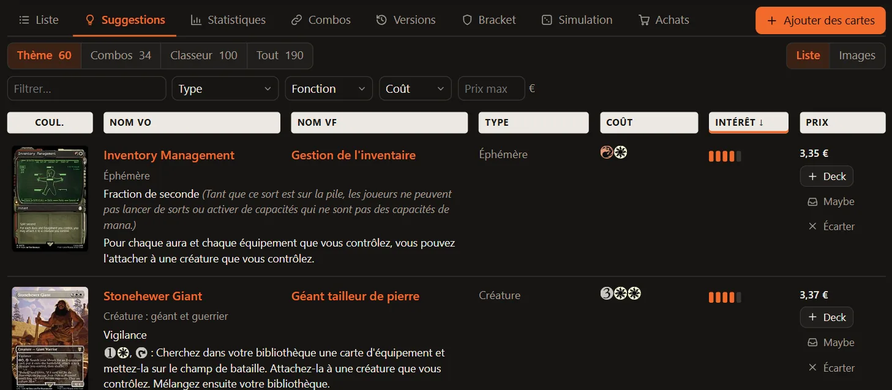
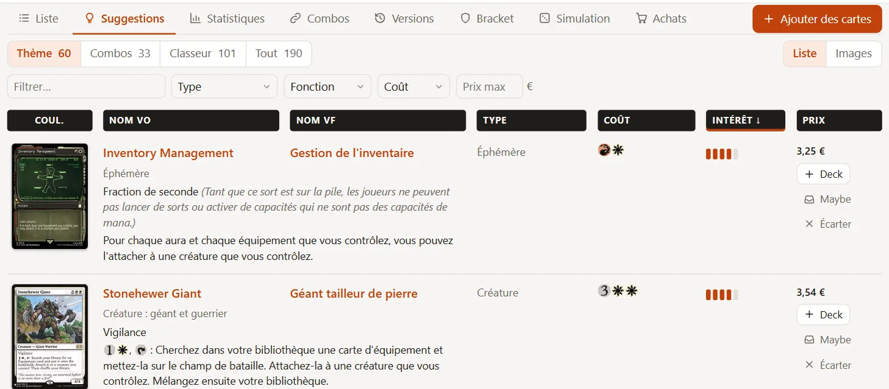
Prix Cardmarket et budget
Les prix Cardmarket pour vos cartes et vos decks, avec alerte en cas de dépassement de budget. Exportez les cartes manquantes au format liste de souhaits Cardmarket en un clic pour calculer directement votre panier.
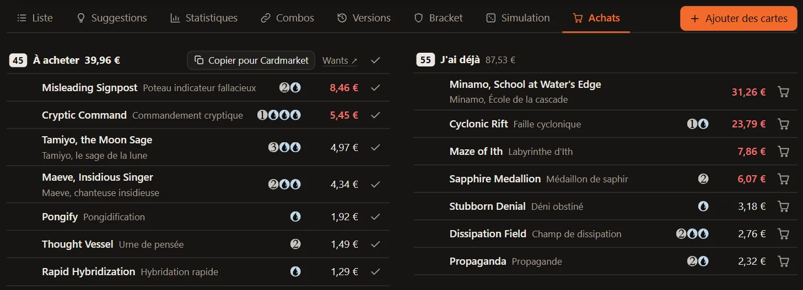
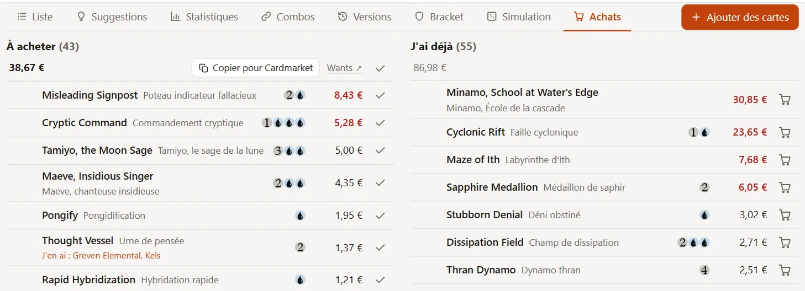
Combos
Les combos du deck sont repérées automatiquement, en croisant plusieurs sources : MTGPics (la base de Magic-Ville) et Commander Spellbook.
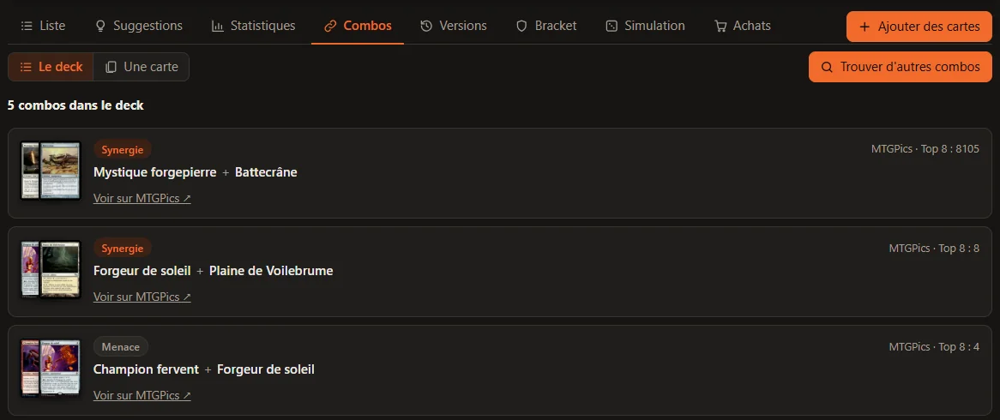
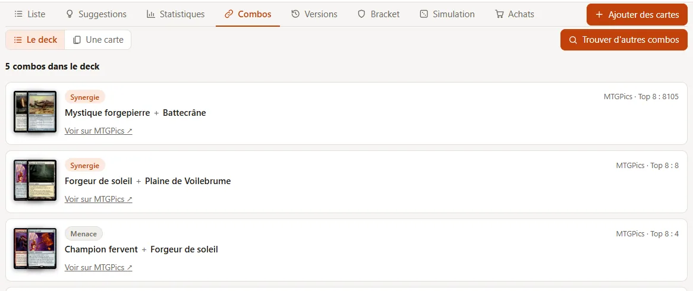
Discussion avec Claude (optionnel)
Un copilote optionnel qui a accès à tout votre Atelier (decks, stats, combos, classeur). Il vous aide à faire vos cuts, explorer des synergies ou vérifier des règles complexes. Aucune clé d'API à configurer : il utilise directement votre abonnement Claude payant (Pro ou supérieur). 100 % facultatif : si vous ne l'utilisez pas, ses boutons se masquent en un clic dans les options.
Et aussi
Import en un collage
Une liste copiée depuis Moxfield, Archidekt ou MTG Arena devient un deck, rangé par catégories.
Partage simplifié
Un lien à envoyer à votre groupe de jeu, qui s'ouvre sans compte : liste, visuel et statistiques du deck. Voir des exemples
Philosophie : ouvert et transparent
- Open source et gratuit. Le code est publié sous licence MIT : accessible, vérifiable et modifiable par tous sur GitHub.
- Vos decks vous appartiennent. Avec un compte, vos decks sont hébergés en France (UE), et vous pouvez à tout moment les exporter ou supprimer le compte. Votre adresse e-mail ne sert qu'à vous connecter.
- L'IA est optionnelle. Tri, statistiques, suggestions, test du simulateur et jeu en solo fonctionnent sans aucune configuration IA.
Le module Claude
Claude ne tourne pas chez nous : il tourne sur votre PC, avec votre abonnement. Le module fait le pont entre le site et Claude Code.
1. Le site
Vous écrivez à Claude sur atelier-mtg.com, dans la discussion d'un deck ou la discussion générale.
2. Le module
Sur votre PC, il reçoit la demande en local (127.0.0.1) et lance Claude Code dans le dossier de vos decks.
3. Claude Code
Il lit vos listes, calcule avec les outils de l'Atelier (prix, probabilités, simulation) et les modifie. Le module renvoie tout à votre compte : le site se met à jour.
- Vos decks en fichiers. Une copie synchronisée avec votre compte : un dossier par deck, sa liste en texte au format Archidekt, son historique. Claude Code y travaille comme dans n'importe quel dépôt.
- Votre abonnement. Claude Code, avec un abonnement Claude Pro ou plus : c'est votre PC qui l'appelle, jamais nos serveurs. Rien ne tourne tant que vous ne lui écrivez pas.
- Fermé au reste du monde. Le module n'écoute que sur 127.0.0.1 et ne répond qu'à atelier-mtg.com, avec un secret propre à votre PC, pour Claude, les synergies et les combos MTGPics seulement.
- L'installer. Sous Windows, il se propose la première fois que vous demandez quelque chose à
Claude, puis se lance avec Windows et se met à jour automatiquement. Sous macOS et Linux : depuis le dépôt, avec
python installer.py(non testé).
Code source, sous licence MIT : github.com/PierreRibeaucourt/atelier-mtg
Questions fréquentes
Accès et sécurité
Faut-il installer quelque chose ?
Rien du tout. L'Atelier est une application web : créez votre compte et accédez à vos decks depuis n'importe quel navigateur, sur ordinateur comme sur téléphone. Seul le module optionnel pour Claude Code s'installe sur PC Windows (en un clic, avec mises à jour automatiques).
L'Atelier fonctionne-t-il sur Mac, Linux et mobile ?
Tout à fait : le site s'ouvre dans n'importe quel navigateur moderne (ordinateur, iOS, Android) et peut s'ajouter à l'écran d'accueil de votre téléphone. Seul le module local pour Claude Code est conçu pour Windows (un script Python expérimental est disponible sur GitHub pour macOS et Linux).
Mes données sont-elles en sécurité ?
La connexion se fait par code unique envoyé par e-mail : aucun mot de passe n'est stocké ni ne peut être volé. Vos decks sont hébergés en France et tout le code source est public sous licence MIT.
Claude
Faut-il payer pour Claude ?
Claude est facultatif : sans lui, tout le reste fonctionne, et les options permettent de masquer ses boutons. Pour s'en servir, il faut un abonnement Claude payant (Pro ou plus), car le compte gratuit ne donne pas accès à Claude Code, et un PC Windows pour le module Claude.
Pourquoi Windows affiche-t-il un avertissement sur le module Claude ?
L'installeur n'est pas signé numériquement (un certificat coûte plusieurs centaines d'euros par an), d'où l'alerte de sécurité Windows au premier lancement. Le module n'écoute qu'en local (127.0.0.1) et son code source est intégralement vérifiable sur GitHub avant installation.
Que fait le module Claude ?
Il garde sur votre PC une copie de vos decks, synchronisée avec votre compte, et y lance Claude Code quand vous lui écrivez depuis le site. Il se lance avec Windows, sans fenêtre : tout se fait sur atelier-mtg.com.
Va-t-il épuiser mon abonnement ?
Il ne travaille que quand vous lui écrivez, ou quand vous cliquez sur un bouton qui l'appelle, comme l'analyse des synergies d'un deck ou « Affiner avec Claude » : rien ne tourne en arrière-plan. Les suggestions, les combos, le bracket, les statistiques, les fonctions des cartes et le test du simulateur ne passent pas par lui. « Compacter » résume une longue discussion pour qu'elle consomme moins.
Votre compte et vos données
Pourquoi un compte ?
Pour retrouver vos decks sur tous vos appareils : navigateur, téléphone, PC. Il ne demande qu'une adresse e-mail, qui sert seulement à vous envoyer le code de connexion. Vos decks sont hébergés en France, et les options permettent à tout moment de les exporter ou de supprimer le compte.
Comment importer mes cartes et mes decks ?
On colle une liste copiée depuis Moxfield, Archidekt ou MTG Arena. La liste d'un deck préconstruit se trouve sur ces sites. Les cartes rangées hors des decks se collent de la même façon dans le classeur.
Peut-on créer un deck Magic en ligne, depuis son téléphone ?
Créez votre compte puis ajoutez l'Atelier à l'écran d'accueil de votre téléphone : l'application fonctionne même hors connexion et synchronise vos modifications dès que le réseau revient. Pour partager un deck, envoyez simplement son lien : la page s'ouvre sans compte.
Puis-je partir avec mes decks ?
« Exporter mes données » (Mon compte) enregistre tout dans un fichier, et le menu « … » d'un deck copie sa liste pour Archidekt, Moxfield, MTG Arena ou MTGO.
Magic
Peut-on jouer en ligne contre d'autres joueurs ?
L'Atelier n'est pas un client de jeu multijoueur : la table de jeu est un mode solitaire (goldfish) pour tester vos mains de départ, vos sorties et les premiers tours à la main.
Comment simuler des parties à quatre ?
En simplifiant. Les trois adversaires sont des archétypes (aggro, contrôle, jetons, combo…). Selon des probabilités, ils posent des créatures, retirent vos menaces, rasent la table ou gagnent sur une combo, mais sans politique. Seul, le simulateur juge la régularité du deck : le mana, les cartes jouées, le board, le commandant. Il comprend une partie des cartes en lisant leur texte, et joue les autres sans leur effet, ou avec une partie seulement : c'est Claude qui lui apprend celles-là. Les taux de victoire ne s'affichent qu'ensuite, quand ils ont un sens.
Je débute, est-ce pour moi ?
Les statistiques comparent votre deck à un modèle type, et Claude peut expliquer une règle, une carte ou proposer des ajouts dans votre budget. Les mots de cette page :
- Ramp : les cartes qui donnent du mana en plus, pour jouer plus gros plus tôt.
- Removal : les cartes qui détruisent ou exilent une menace adverse.
- Tuteur : une carte qui va chercher une carte précise dans votre bibliothèque.
- Combo : des cartes qui, ensemble, gagnent la partie ou créent un effet infini.
- Cut : les cartes à retirer pour revenir à 100.
- Bracket : le niveau de puissance officiel d'un deck Commander, de 1 à 5, pour jouer à armes égales.
- Game Changers : une liste officielle de cartes très puissantes, qui font monter le bracket.
La recherche comprend-elle la syntaxe Scryfall ?
Elle privilégie un formulaire multicritère visuel (inspiré de Magic-Ville) où l'on coche ses critères : identité de couleur, type, texte, coût de mana, prix Cardmarket et fonction dans le deck (ramp, pioche, tuteur, removal…).
Les règles et les combos sont-ils à jour ?
La liste officielle des Game Changers est actualisée quotidiennement, et les nouvelles cartes sont ajoutées automatiquement dès leur sortie. Les combos proviennent de Commander Spellbook et de MTGPics, maintenus par leurs communautés.
Les prix tiennent-ils compte de l'état, de la langue, du port ?
Les montants affichés correspondent au prix de tendance Cardmarket pour l'édition la moins chère, à titre indicatif. L'Atelier ne vend pas de cartes, mais l'onglet Achats exporte vos cartes manquantes au format wishlist Cardmarket en un clic.
Genèse du projet
Par PierreRibeaucourt, créateur de l'Atelier
À l'origine, mes listes tenaient sur de simples fichiers texte que j'analysais en ligne de commande avec un LLM et quelques ressources théoriques (ratios de mana, moteurs de pioche, conditions de victoire).
Manipuler du code brut a vite montré ses limites. Pour ajuster un cut ou évaluer instantanément l'impact d'une modification, il me fallait une vraie interface graphique qui réunisse les points forts des outils de référence :
- Archidekt pour la table d'essai et les tests en solitaire ;
- Magic-Ville et Commander Spellbook pour la recherche multicritère et les combos ;
- Cardmarket pour les cotations du jour ;
- les règles officielles pour le contrôle direct des cartes interdites, des brackets et des Game Changers.
J'ai donc créé l'Atelier pour réunir tout ça : une interface web rapide, sur ordinateur comme sur téléphone, pour construire vos decks, avec un copilote IA en option quand on veut creuser une liste.